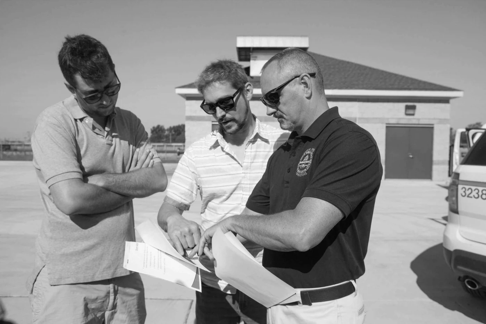
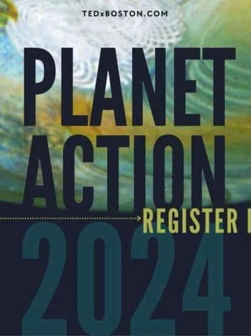

Defense & Energy
The Burden
Reframing clean energy through US military readiness and national security to unite defense leaders and conservative lawmakers.
Case Study Details →Explore how Roger Sorkin uses ethnographic storytelling, trusted messengers, and cinematic production to reframe contentious issues, unite polarized audiences, and accelerate policy solutions.
When I heard a combat veteran describe losing his friend to a fuel convoy attack in Iraq, I recognized a powerful untold story: how our military's dependence on fossil fuels was costing lives and undermining national security.
This insight became The Burden, a groundbreaking documentary that bridged unlikely allies: environmental advocates, defense conservatives, and military commanders: through a shared solution with different motivations. One policy wonk called it "a white paper disguised as a film": perhaps the greatest compliment possible for my approach.
Pinpoint precisely where public discourse and policy negotiations have stalled due to polarization or narrative fatigue.
Deliver attainable pathways that convert emotional resonance into durable legislative and institutional change.

"Each project is designed with specific outcomes in mind: a signal cutting through the noise to create measurable change."
Explore documentary films, scenario simulations, and national communications campaigns engineered for measurable policy and behavioral impact.
Reframing clean energy through US military readiness and national security to unite defense leaders and conservative lawmakers.
Case Study Details →
Addressing sea level rise as a direct threat to US military installations and regional economies in Hampton Roads, Virginia.
Case Study Details →
Immersive scenario simulations at Gabelli School of Business training business leaders to navigate contentious, polarized topics.
Case Study Details →
Defending and accelerating clean energy momentum by positioning sustainability as a powerful economic driver.
Project Details →
Centering American farmers as trusted messengers to unite agricultural communities and environmental advocates for the Farm Bill.
About this Film →
Three-part film series demonstrating grid modernization readiness and workforce opportunities for the energy transition.
About this Film →
Partnered with ASU to explore coal-to-renewable transition on the Navajo Nation and Northern Arizona tribal communities.
About this Film →
Strategic communications and internal alignment for the Indianapolis Airport Authority sustainability initiatives.
Project Details →
Campaign produced for NRDC and E2 building content to defend clean energy and improve farming livelihoods.
Project Details →
Keynote on how ethnographic storytelling and credible messengers break through societal paralysis on planetary issues.
Watch the Talk →
Created with Flex Your Rights and utilized across the political spectrum from the ACLU to Cato Institute to protect citizens and police.
More Details →Whether you're preparing for a critical legislative push, navigating executive communication hurdles, or seeking to produce a high-impact documentary film, let's discuss how strategic narratives can turn your challenge into an advantage.